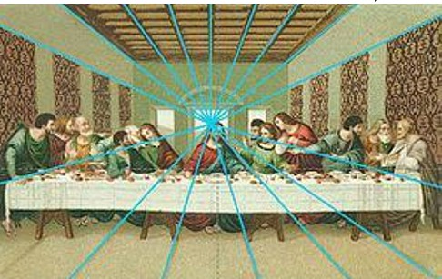
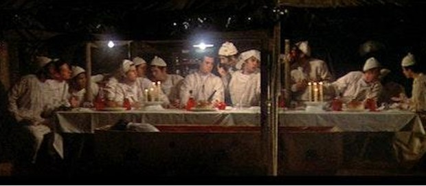
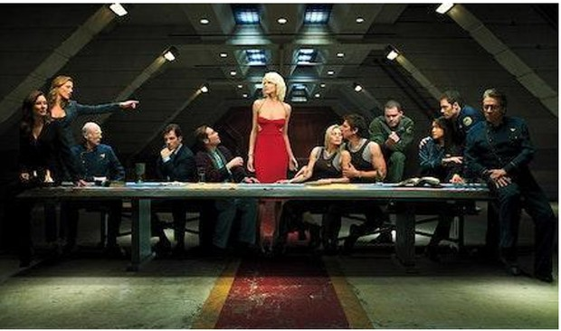

גם אם התסריט כתוב היטב והמשחק משובח, החוליה המשלימה לחוויית הקסם הקולנועי היא העיצוב האמנותי (Production Design). הוא זה שמעניק את התחושה של הזמן, המקום והאווירה. כדי לנהל דיאלוג עם מעצב אמנותי, על הבמאי והמפיק להבין את יסודות השפה של העיצוב האמנותי.
"הציור בשבילי הוא שפה... צבע מדבר עם צבע, כתם עם כתם... כדי להבין ציור חייב אדם ללמוד את השפה" (לאה ניקל).
הקולנוע הושפע עמוקות מאמנות הציור בעיצוב החלל, התאורה והקומפוזיציה.
ליאונרדו דה וינצ'י: יצירתו "הסעודה האחרונה" השפיעה על אינספור סרטים, כמו "מ.א.ש" של רוברט אלטמן.
אדוארד הופר: צייר של בדידות וניכור עירוני. יצירתו "ניצי הלילה" (Nighthawks) השפיעה על סגנון ה'פילם נואר'.
הסדר הקלאסי: פותח ביוון העתיקה ומבוסס על פרופורציות מדויקות וסימטריה. דוגמה בולטת: הפרתנון באקרופוליס.
אדריכלות גותית: מאופיינת בקשתות מחודדות, חלונות ויטראז' ותחושת גובה שמטרתה להאדיר את האל. השפיעה רבות על סרטי אימה ופנטזיה כמו "דרקולה" או "השומרים".
באוהאוס: סגנון מודרני מבית המדרש הגרמני. המוטו: "פחות זה יותר". דגש על פונקציונליות וצורות גיאומטריות פשוטות.
צבע הוא כלי פסיכולוגי מיידי. בגלגל הצבעים של ניוטון אנו מבחינים בין צבעי יסוד (אדום, צהוב, כחול) וצבעים משניים.
תאורת רמברנדט: שימוש בצללים דרמטיים ובמשולש אור קטן מתחת לעין, טכניקה המיושמת עד היום בצילום פורטרטים וקולנוע.
נתחו את הקטעים הבאים בהיבט העיצובי. התייחסו לקשר בין הז'אנר לעיצוב הסט, לצבעוניות ולפריטים בחלל.